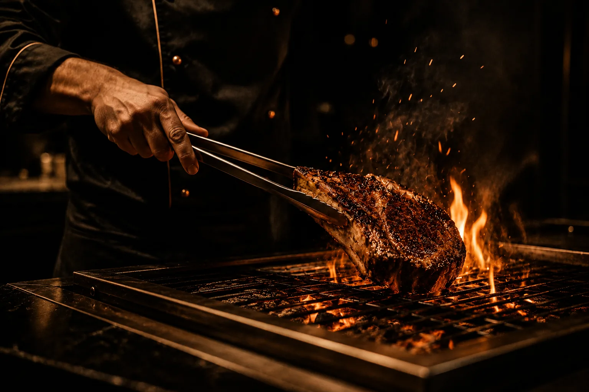
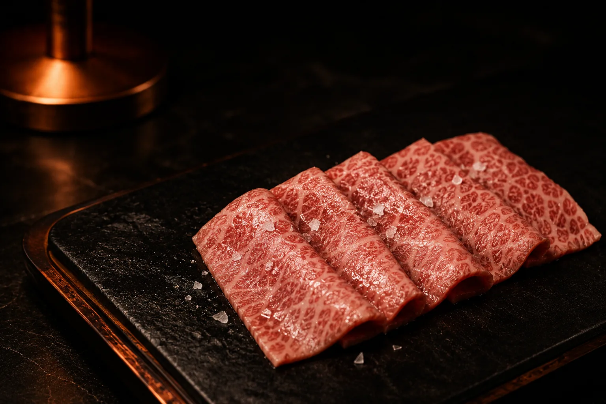
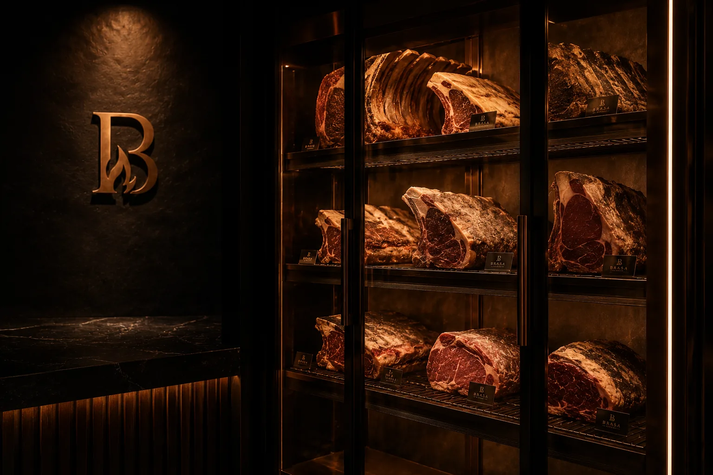
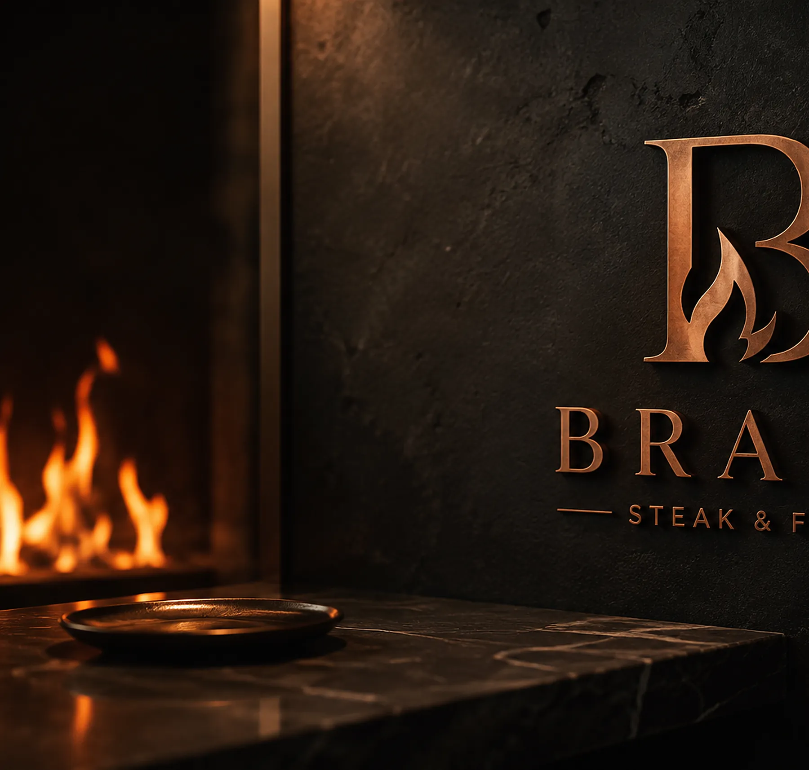
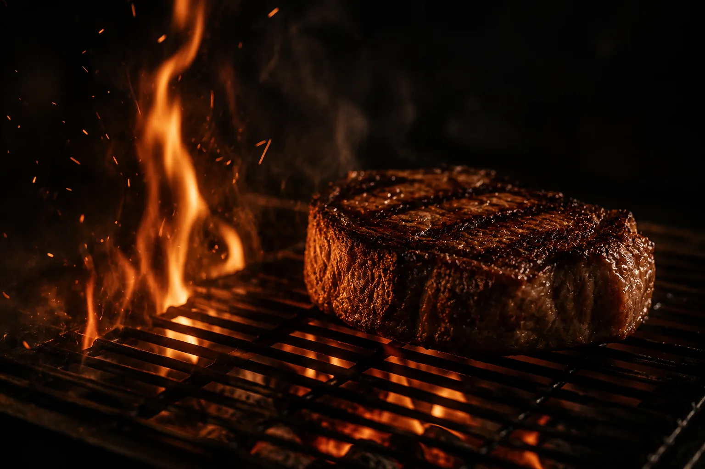
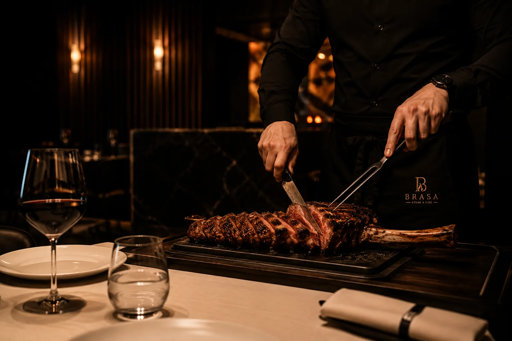

1,5 °C
Cave de maturation
82 % d'hygrométrie, flux d'air constant, pièces datées à l'unité.
Site de démonstration — ce restaurant n'existe pas. Contenus fictifs.
Retour au portfolio
9 rue de la Démonstration · 57000 Metz
+33 (0)3 87 00 00 00

L'Expérience
Choisir. Attendre. Saisir. Laisser reposer. Il n'y a pas de secret chez BRASA — seulement de la rigueur, répétée chaque service.
01 — Choisir
Nous ne commandons pas par catalogue. Notre chef et notre boucher se déplacent : chez un éleveur de Simmental en Bavière, chez un négociant galicien pour la Rubia, chez un exportateur agréé de Kagoshima pour le Wagyu A5.
Ce qu'on regarde d'abord : la couleur du gras, la fermeté de la fibre, l'âge de la bête. Une vache galicienne de dix ans n'a rien à voir avec une génisse de trente mois — et c'est précisément ce qui nous intéresse.

02 — Attendre
Notre cave de maturation est visible depuis la salle. Elle tourne à 1,5 °C, 82 % d'hygrométrie, avec un flux d'air constant. Les pièces y perdent jusqu'à 30 % de leur poids en eau.
C'est cette perte qui fait tout : le goût se concentre, les enzymes détendent la fibre, le gras développe des notes de noisette et de beurre. Une côte à 40 jours n'a plus rien du goût neutre d'une viande fraîche.
Chaque pièce est datée. Nous la sortons quand elle est prête — pas quand le service en a besoin.


« La flamme sèche saisit.
La braise cuit. La cendre fait reposer. »
Le principe du grill BRASA
03 — Saisir
Le foyer est allumé deux heures avant le premier service et n'est jamais éteint avant la fermeture. Chêne pour la puissance et la longueur de braise, hêtre pour la finesse de la fumée.
La grille se monte et se descend au centimètre. Une bavette veut un choc thermique court et brutal ; un tomahawk de 1,4 kg demande vingt minutes de chaleur indirecte avant sa minute de gloire au-dessus des flammes.
Le grill est ouvert sur la salle. Vous voyez tout, y compris quand ça fume. C'est le principe.

04 — Laisser reposer
Vingt-huit couverts. Pierre noire, cuivre patiné, cuir fauve, lumière basse et chaude qui descend à mesure que la soirée avance. Aucune table n'est loin du feu.
Après la cuisson, chaque pièce repose entre cinq et quinze minutes selon son poids. Ce temps n'est pas perdu : c'est lui qui redistribue les jus. Nous en profitons pour servir le vin et laisser la conversation s'installer.
Comptez deux heures pour un dîner complet. Nous ne faisons pas deux services sur la même table.

1,5 °C
82 % d'hygrométrie, flux d'air constant, pièces datées à l'unité.
28
Une seule salle, un seul service par table. Réservation conseillée.
250
Bordeaux, Rhône, Rioja, Toscane et une belle sélection de Moselle.
Privatisation
Dîner d'affaires, anniversaire, repas de fin d'année : BRASA se privatise entièrement à partir de 20 personnes, midi ou soir. Menu construit avec le chef, accord vins sur mesure, service dédié.